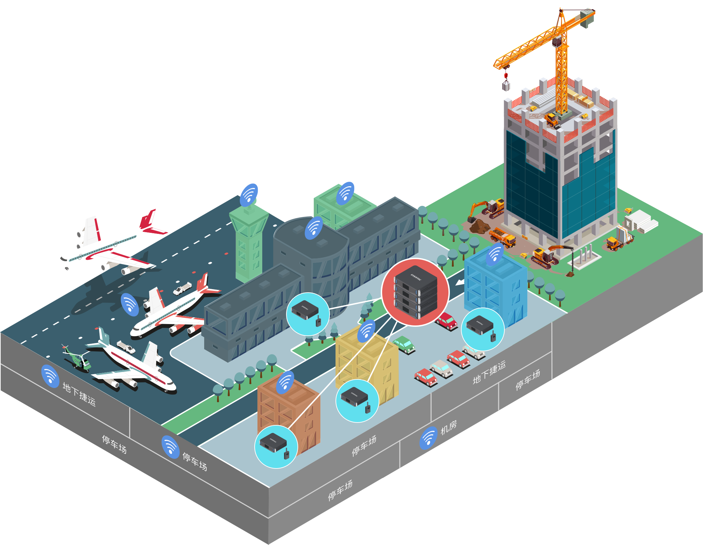
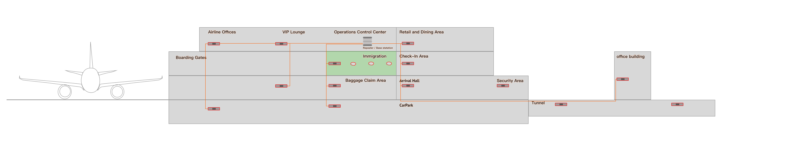

数字光纤远端（ORU）沿航站楼、廊桥、停机坪、停车场、地下捷运与在建楼宇分布，把统一主基站的信号送达每一处——运营多元化催生越来越多的通信队伍，一张网即可承载。

{{ z.ops }}
机场日益成为城市间最高效的通勤枢纽，规模与客流对运行管理提出更高标准。基于基站组合的传统专网，正被数字化、智能化的集成通信平台取代——从基站到传输系统全程数字化，为未来运行与应急响应提供有力支撑。
DistriNET MAX 最多可同时提供 24 条全域通信信道，把语音、数据与调度并发承载在一条更宽、更可靠的通路上，从容应对多业务并发导致的通信拥塞。
{{ s.desc }}
不同建设阶段的航站楼可无缝扩容：一座航站楼的主基站作中枢，其余航站楼作为汇聚中心，把信号逐级扩展到更大范围。为广阔的航站楼与停机坪清晰划定各区专网的覆盖范围与呼叫清晰度，高效协同众多部门与服务机构。

{{ n.desc }}
航站楼、廊桥、停机坪、地下捷运——一套数字融合专网，覆盖每一个作业环节。